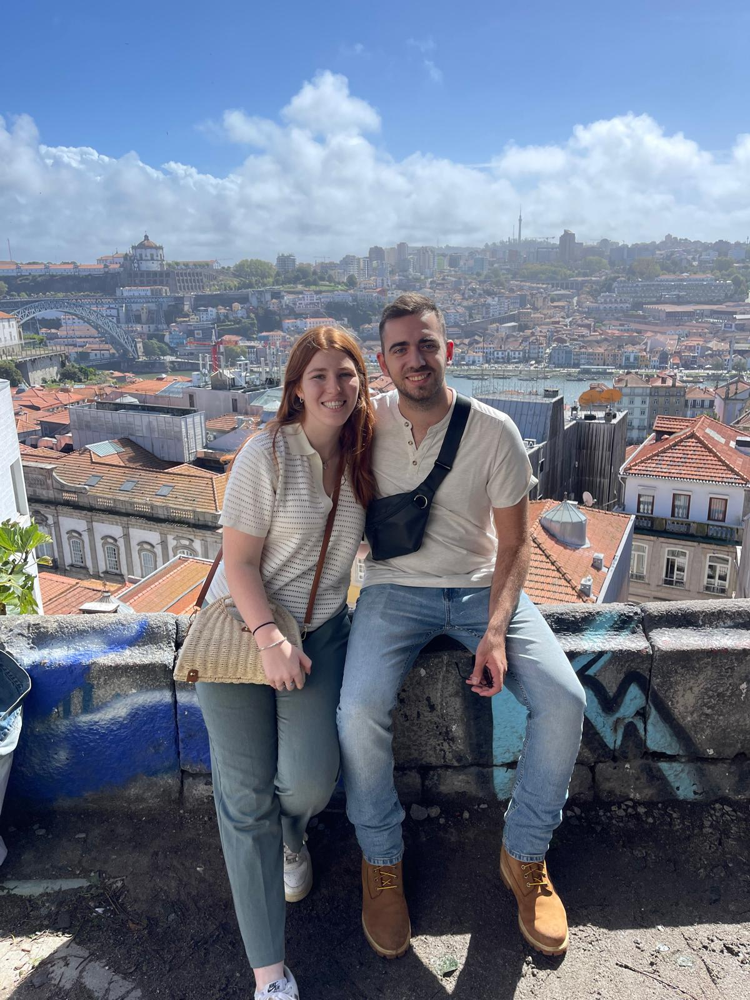
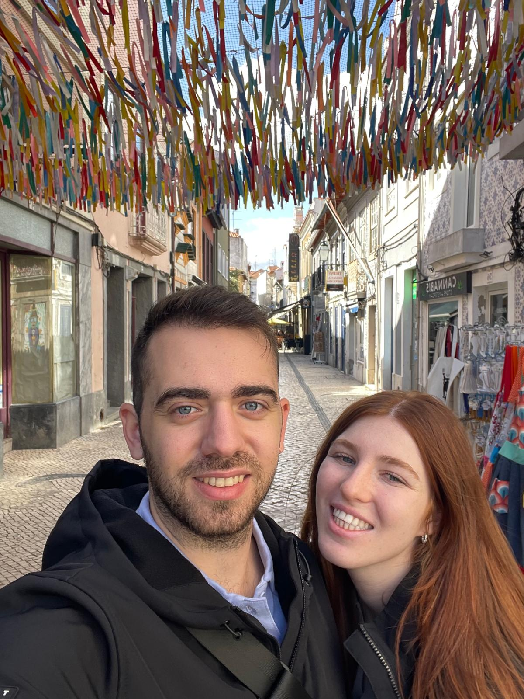
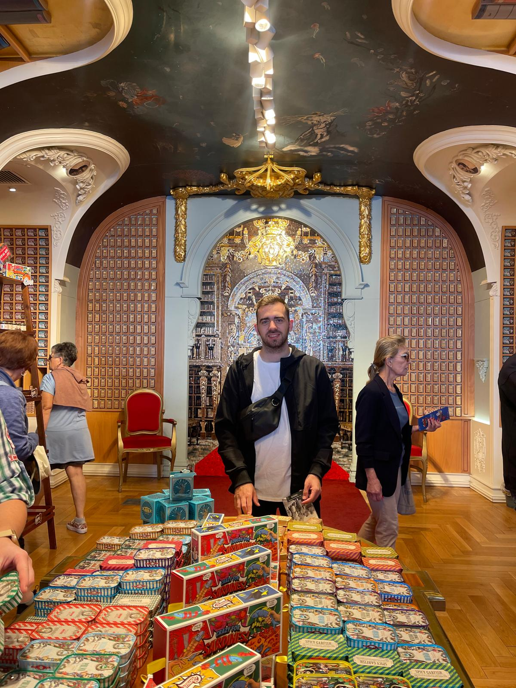
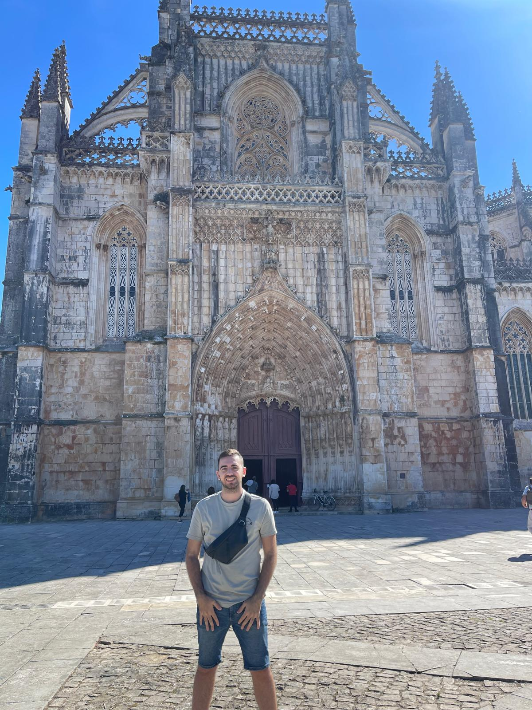
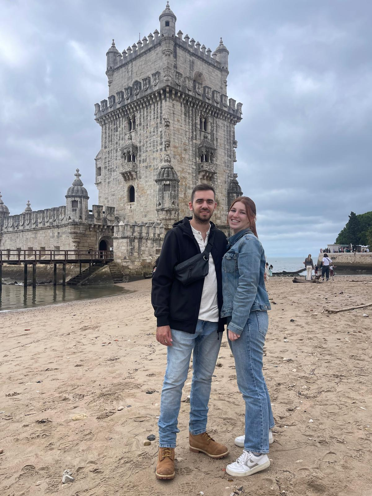

We traveld to Portugal and got to know this remarkable place.
In this site we wish to give you my perspective from my trip through pictures from every site we visited.
We started our journey in landing on Humberto Delgado Airport in Lisbon at 22:00 hoping to catch the last train to Porto.
We missed it in only few mintues and looked for another way to reach Porto. It is important to mention that the drive between Lisbon to Porto takes about 4 hours.
After we haven't find a train or a bus we Decided to use Bolt wich similar to Uber. After 4 hours drive and one hour of charging the driver's electric car and 200 euros less we arrived Porto at 02:30 AM.
We stayed for two days and had to most amazing time we could.

From Porto we took a train to Aveiro which also known as "Vencie of Portugal" but we guess whoever called it that way was never in real Venice.
We arrived and placed in a wondeful hotel we a great view over the main river the cross the city. Afternoon we went for a nice boat cruise with local guide.
At the morning we ate a nice breakfest and then we tried the local traditional destert called "Ovos moles de Aveiro" (literally, "soft eggs from Aveiro"). It is basiclly egg yolks and suger, we didn't like it to much...
From Aveiro we continued by public transportation to another great city named Coimbra.

Coimbra is a beautiful old city and it houses the oldest university in Portugal. People from all over Portugal come to study at Coimbra university.
We arrived in Coimbra by bus in a nice ride that took about an hour and a half. Coimbra is a small university city and the whole city revolves around it. When we arrived it was European Union Research and Innovation Days and the city was full of stalls of students explaining their field of research.
The next day we walked around the city and entered a very famous canned fish store called The Fantastic World of the Portuguese Sardine that has been selling food since 1942. From there we continued to a very nice little town called Batalha.

Batalha is a small town in the center of Portugal which is in the province of Leiria, the town has about 15,000 inhabitants and the number of its annual visitors is about 300,000 tourists.
This is thanks to the fact that in the years 1383-1385 a great battle (Which gave the place the name "Batalha") took place there that greatly influenced Portuguese history. Following the battle, a huge monastery was built on the spot by King João I.
During our stay in Batalha we mainly rested and stayed in a nice hotel with a large pool and in the evening we ate at one of the "all you can eat" style sushi restaurants that exist in the city.

We ended our trip in Portugal with three days in wonderful Lisbon.
On the first day we walked back and forth on Lisbon's great pedestrian street Rua Augusta. The pedestrian street is full of local shops, restaurants and famous clothing brands. The pedestrian starts at Praça do Comércio near to the sea and extends for several kilometers.
At the second day we visited a nearby city called Sintra which is known for its large and colorful palaces where the kings of Portugal lived for generations. In the evening of the second day we took a nice cruise where we enjoyed a glass of beer over the background of the sunset.
On the last day, we walked through the well-known Belem quarter, which contains several large and famous monuments in the city, including the Mosteuiro Dos Jeronimos and the Torre de Belém. From there we went to the airport and returned to Israel.
